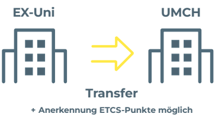

Werden Sie zum UMCH-Studierenden
Das Zulassungsverfahren für den UMCH kann jederzeit und unkompliziert absolviert werden. Es besteht aus einem motivationsbasierten Interview und einer Kurz-Evalua- tion, die Ergebnisse sind innerhalb von 48 Stunden verfügbar. Das Verfahren kann be- reits während der Schulzeit durchlaufen werden, entweder vor Ort in Hamburg oder per Video Call. Alternativ ist eine Zulassung über den Test für Medizinische Studiengänge (TMS) möglich. Voraussetzung für ein Studium am UMCH ist eine allgemeine Hoch- schulzugangsberechtigung oder ein gleichwertiger Abschluss. Die Auswahl erfolgt auf Grundlage der Bewerbungsunterlagen, eines Interviews und einer schriftlichen Prüfung zu Biologie, Chemie und Allgemeinwissen.
Zum Medizinstudium in nur 3 Schritten
1. Short Registration über unser Online- Bewerbungsportal
2. Motivationsbasiertes Interview und Kurz-Evaluation
3. Gratulation! Der Studienvertrag kann unterzeichnet werden
So kommen Sie an ein Studium am UMCH
Für ein Studium am UMCH benöti- gen Sie eine allgemeine Hochschul- zugangsberechtigung (Abitur oder Äquivalent). Auch Bewerbungen mit ausländischen Schulabschlüssen, die dem deutschen Abitur entsprechen (z. B. A-Levels, IB), sind möglich. Be- werber mit anderen Abschlüssen oder Nicht-EU-Bürger sollten sich beim UMCH-Team informieren. Früh- zeitige Bewerbungen sind emp- fohlen, da die Studienplatzvergabe sukzessive erfolgt. Zum Zeitpunkt der Bewerbung sollten Sie sich in der Oberstufe oder bereits im Besitz ei- ner Hochschulzugangsberechtigung befinden.
Die Aufnahme eines Studiums der Humanmedizin am Campus in Ham- burg erfolgt unabhängig von Ihren Schulnoten. Sie können dieses ohne Wartezeit pünktlich zum nächst- möglichen Wintersemester begin- nen. Einzige Voraussetzung dafür ist die erfolgreiche Teilnahme am uni- versitätseigenen Zulassungsverfah- ren.
Eine Hochschulstart-Bewerbung ist am UMCH nicht erforderlich. Die Zu- lassung erfolgt normalerweise über ein Motivations- und Eignungsinter- view sowie eine schriftliche Kurzeva- luation. Wer jedoch am TMS teilge- nommen und mindestens 70 Punkte erreicht hat, erhält eine Sofortzulas- sung, vorausgesetzt, es sind noch Studienplätze verfügbar. In diesem Fall entfällt das UMCH-eigene Zulas- sungsverfahren.
Die Auswahl der zukünftigen UMCH-Studierenden erfolgt auf Grundlage der schriftlichen Bewerbungsunterlagen und unseres Zulassungsverfahrens.
m mündlichen Teil des Zulassungsverfahrens geht es in erster Linie um die persönliche Qualifikation und Motivation des Bewerbers. Dazu können auch Fragen zu den von Ihnen eingereichten Bewerbungsunterlagen gehören (z. B. Arbeits- oder Praktikumsbescheinigungen für frühere Tätigkeiten im medizinischen Bereich oder ehrenamtliche Tätigkeiten usw.).
Der schriftliche Teil besteht aus 75 Multiple-Choice-Fragen zu Biologie, Chemie und Allgemeinwissen. Alle drei Bereiche sind gleich gewichtet.
Die Ergebnisse des schriftlichen und mündlichen Teils werden in einem Verhältnis von 60:40 in die Gesamtbewertung einbezogen.

Interview
Sprache:
Englisch
Mögliche Themen:
- Qualifikation und Motivation für das Studium
- Bisherige Aktivitäten im medizinischen Bereich
- Vorstellung zum Karriereverlauf
- Kommunikations- und Empathiefähigkeiten
Kurz-Evaluation
Sprache:
Englisch
- Grundlegende Fragen zu Biologie
- Grundlegende Fragen zu Chemie
- Grundlegende Fragen zu
- Allgemeinwissen
- Gleiche Gewichtung der Themen
- Das Interview dauert 15-20 Minuten.
- Für die Evaluation (Multiple-Choice-Fragen) haben Sie 90 Minuten Zeit.
- nach Verfügbarkeit der Plätze eine Zusage für das Wintersemester 2024/2025 oder
- eine Absage
Eine etwaige Wartezeit können Sie mit der Teilnahme an einem unserer Vorbereitungskurse überbrücken. Wir bieten den 3 oder 12-wöchigen ,,Medical Foundation Track“ an. Nähere Informationen hierzu finden Sie hier.

Setzen Sie Ihr Medizinstudium am UMCH fort
Wenn Sie bereits ein Studium der Medizin an einer an- deren Universität begonnen haben, ist es grundsätzlich möglich, am UMCH dort weiter zu studieren, wo Sie zu- letzt aufgehört haben – optimalerweise ohne Zeit zu verlieren. Wir prüfen hierzu, welche Leistungen, die Sie akademisch bereits erbracht haben, angerechnet werden können und was Sie unter Umständen nachholen müs- sen. Bitte kontaktieren Sie uns für eine unverbindliche Vorabprüfung, nach welcher wir Ihnen mitteilen, ob wir Ihnen Studienzeit und/oder -leistungen anrechnen kön- nen. Hierfür benötigen wir lediglich einige eingescannte Dokumente, die Sie uns per E-Mail an info@edu.umch.de zusenden können.
Auf Englisch
Falls das Dokument Ihnen lediglich in einer anderen Sprache vorliegt, reichen Sie bitte eine englischsprachige Übersetzung ein.
Ihrer bisherigen Universität
Dieser muss die Menge an ECTS-Punkten enthalten, die Sie pro Fach erhalten haben beziehungsweise die Stundenanzahl pro Fach wider- spiegeln.
Auf Englisch
Bitte füllen Sie das entsprechende PDF-Formular aus, speichern es, scannen es ein und und schicken es gemeinsam mit den Scans der oben genannten Dokumente an admissions@edu.umch.de.

Um den Studierenden ein erstklassiges Medizinstudium zu ermöglichen, werden Studiengebühren erhoben.

Ein Studienfinanzierungsmodell, das von der Haspa, der größten Sparkasse in Deutschland, für die Studierenden am UMCH entwickelt wurde.